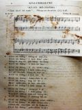

Languages
台文
｜
中文
｜
日本語
｜
English
字體
小
｜
中
｜
大
首頁
/
白話字數位典藏
白話字數位典藏全文檢索
查詢模式
選擇年代
清國時代(1885-1895)
日本時代(1895-1945)
戰後(1945-1969)
1885-1895
1896-1905
1906-1915
1916-1925
1926-1935
1936-1945
1946-1955
1956-1965
1966-1969
1970-1980
1980-1990
1990-2000
2000-2010
2010-
選擇文類
詩
散文
小說
戲劇
傳記
選擇作者
陳清忠
陳清義
編輯部
柯設偕
吳天命
明有德
偕叡廉
周天來
劉華義
王守勇
林茂生
陳添旺
王占魁
柯維思
賴仁聲
陳瓊琚
雪峰逸嵐
吳清鎰
郭水龍
蕭樂善
許水露
葉金木
陳金然
章王由
廖得
鄭連坤
潘道榮
楊士養
梁秀德
劉約翰
周淑慧
高金聲
林燕臣
黃六點
蔡愛義
許有才
主筆
巴克禮
郭朝成
陳鳩水
張基全
陳明清
陳能通
拾穗生
顏振聲
卓恆利
傳道局
胡文池
劉主安
鄭兒玉
吳萬生
Google Search
Yahoo Search
全部
刊名
標題
標題(教羅)
全文
全文(教羅)
作者
第4頁，共10頁(共182筆資料) 0.59124779701233sec
1
2
3
4
5
6
...
10
To Page
GO
文字列表
圖文列表
排序
日期
文類
刊名
作者
影像
[1968-4 台灣教會公報 文類-詩 作者-鄭兒玉/Tēⁿ Jî-gio̍k]
世上的光，地上的鹽 [ Sè siōng ê kng, tē siōng ê iâm ]
世上的光，地上的鹽 鄭兒玉 作詞 駱維道 作曲 1968.04.15 1028號 P.18 主你交代我工程，我盡力teh拍拚， 若是這世間聲音，過頭濟攪擾心， 彼時我心愛定定，集中注神來聽 對日日著做工程，主teh指示的聲。 Taⁿ我佇工作中間，驚了只趁世間， 雖無嫌境遇艱苦，著為生活奔波， 懇求天父伸)聖手，扶持免受引誘， 予我佇無閒中間，也khîⁿ-tiâu主平安。 世間生活無單純，容易跋落沉淪， 有時明知是不義，iáu-kú學得閃避， 有時權勢逼我行，辜負我主尊名， 願我勇敢佮清廉，成做世間光，鹽。 社會辦事ná複雜...
[1933-11 台灣教會公報 文類-詩 作者-吳萬生/Gô͘ Bān-seng]
大衛凱旋歌 [ Tāi-pi̍t Khái-soân koa ]
大衛凱旋歌吳萬生1933.11, no. 584, pp. 8 1. Gâu做良木心抱犧牲，捌羊欠缺為羊捨命；早日大衛救羊脫獅，這號故事真濟人知。2. 奉遣軍營打探兄哥，耳聞敵將誇口自高；將軍想計都無奈何，大衛仰天祕密祈禱。3. 對敵勇猛大家免驚，倚靠上帝必定較贏；聖上胞兄極力挽留，心堅志決為國報仇。4. 照佮軍器用不自由，毋值提石若拋繡球；敵將倒地敵軍逃走，一時若準溪水嘩吼。5. Koāⁿ頭高唱將近營城，元帥軍官整列歡迎；步進王宮拜見陛下，聲聲句句呵咾有抱。6. 大衛受褒攏無嬌態，太子看了戀慕意愛；結交知己相敬如賓，較好滿漢海味山珍。7. 這號朋友世間難得，鑑觀古今堪列第一；凡事尊榮全歸上...
[1932-2 台灣教會報/芥菜子 文類-詩 作者-吳天命/Gô͘ Thian-bēng]
阮所吟的紀念詩 [ Goán só͘ gîm ê Kì-liām Si ]
阮所吟的紀念詩 1932.02 第563卷，芥菜子73號，p.16 (吳天命) 艋舺教會佇本年1月1號暗時，有開主日學祝賀會，也有紲紀念設教60週年。這號事已經有寫佇芥菜子報，2月份的教會消息的內面。今因為柯設偕先生的希望，所以愛將阮所吟的紀念詩來寫佇遮。 A. 1.企佇遠遠烏暗罪惡的世界， 千萬靈魂永遠teh欲沈淪， 是誰歡喜傳報救主仁愛， 若牧者山--裡揣失落羊群。 和 萬權能已經賞賜我， 萬權能已經賞賜我， 恁去普天下傳福音予萬百姓， 我佮恁佇teh到永遠。 2.萬國大門現開開莫得延遷， 基督的兵好膽進前來去， 取齊基督信徒大家相結連， 報揚真理世人得著...
[1925-6 台南府城教會報 文類-詩 作者-劉約翰/Lâu Iok-hān]
日過日 [ Ji̍t kè ji̍t ]
日過日 1925.06 第483卷 p.9-10 (劉約翰) 內心日日換新（II 林.3：16） 1.「日過日。」上帝啊！求你換新我。 用你祝福的活命； 「日過日。」上帝啊！求你扶持我， 用你的權力恩典的神。 2.「日過日。」救主啊！求你提攜我， 予你的奴僕意愛自由； 「日過日。」主啊！求你幫贊我， 予我會做你攏總的旨意。 3.「日過日。」救主啊！求你保持我， 抵抵踮佇你的疼痛； 孤單的倚靠佮順趁， 看到佇你的頂面。 4.「日過日。」救主啊！求你賞賜我， 我所大欠缺攏總的氣力； 閣用你佮你祝福的聖神， 永遠保守我佇你的感動。 5.「日過日。」來佮這個...

[1925-10 芥菜子 文類-詩 作者-陳清忠/Tân Chheng-tiong ]
(1)
祈禱無停 [ KÎ-TÓ BÔ-THÊNG ]
「祈禱無停」 「著祈禱無soah」。帖撒羅尼迦（1）5:17.E.R.W Edna. R. worrell. （五線譜） 1. 祈禱無停！上帝近倚；祈禱無停！伊欲聽我；上帝應允，逐項穩當；祈禱無停！伊欲應咱。 2.祈禱無停！你所欠用；祈禱無停！伊欲贊成；你所要求，上帝歡喜；祈禱無停！伊欲予你。 3.祈禱無停！犯罪ê時；祈禱無停！用好贏--伊；耶穌原本，也捌受試；祈禱無停！伊欲牽你。 4.祈禱無停！傷悲ê時。祈禱無停！伊tháu放你；艱苦袂會瞞過上帝；祈禱無停！伊創好勢。 5.祈禱無停！信仰khah深；祈禱無停！也著專心；深信消滅所有煩惱；祈禱...
[1925-7 芥菜子 文類-詩 作者-陳清忠/Tân Chheng-tiong ]
(1)
正手KAP倒手 [ CHIÀN-CHHIÚ KAP TÒ-CHHIÚ ]
正手KAP倒手 倒手呵咾正手講： 兩個相倚來ê時； 你是比我重倍gâu， 雖bóng你我是雙生。 山水景緻你會為， 請安批信做你來； 獨獨我袂做半項。 Kap你比並毋應該。 正手謙卑應伊講： 猶久一項我袂leh！ 小妹、小弟我袂抱 毋值你抱ê好勢。 養飼天國ê細囝， 就是最高ê藝術； 你io好勢ê因端， 恁厝khah倚佇心肝。 陳清忠譯...
[1925-7 芥菜子 文類-詩 作者-陳清忠/Tân Chheng-tiong ]
(4)
囡仔KAP天使 [ GÍN-NÁ KAP THIN-SÀI ]
囡仔KAP天使 早起、下昏、中晝、暗時；施克來吟講：「呵咾上帝。」 後來越頭koh做伊ê工，來趁日日ê米糧。 伊做真thiám久koh gâu，頭毛垂落汗滿面。 常常佇做工ê中間，停睏，吟講：「呵咾上帝。」 然後pho̍ah伊ê頭毛佇後面，歡喜koh再起工。 牧師講：「按呢真著，無僥疑上帝有聽著lah！ 今仔日你所呵咾ê聲，無khah 輸上帝ê大奴僕。 伊佇這個救主koh活ê日，踮佇殿堂呵咾上帝。」 施克來講：「願上帝予我用彼個方法內呵咾伊，也死！」 暝過，日曝，...
[1925-7 芥菜子 文類-詩 作者-陳清忠/Tân Chheng-tiong ]
(2)
力間（海龍王） [ LE̍K-KAN (HÁI-LÊNG-ÔNG) ]
力間（海龍王） 佇一个熱天力間坐佇Ba-tek-海ê石磐，吟伊一生悲傷ê歌，用所giâ ê琴來彈。 青翠ê海湧，溢來溢去佇伊坐
[1926-1 芥菜子 文類-詩 作者-陳清忠/Tân Chheng-tiong ]
(1)
暗時Ê祈禱 [ ÀM-SÎ Ê KÎ-TÓ ]
暗時Ê祈禱 REV. RAY PALMER .IRA D. SANKEY. （五線譜） 1. 離開罪惡ê世境， 阮來朝見你面前： 懇求上帝予阮見， 賜阮恩典ná加添。 2. 天頂星辰金熾熾， 毋是家己會按呢； 阮若無靠你chhiō光， 暗暝包阮佇中央。 3. 真理ê光會khah贏， 烏暗、煩惱kap驚惶； 願主將光普照阮， 安然徛在到永遠。 注意。 頂面所寫ê譜，kap咱平時佇養心神詩teh吟ê譜有各樣。這首是專專查甫聲--ê...
[1928-8 台灣教會報/芥菜子 文類-詩 作者-陳清忠/Tân Chheng-tiong ]
佈道的詩 [ Pò͘-tō ê Si ]
佈道的詩 陳清忠 1928.08.01 521卷(芥菜子第30號) p.20 這擺的修養會吳牧師娘有備辦幾若首詩，佮傳道相佮鍛鍊；目的是愛做佈道的路用；不止好聽，閣再不止快學，阮下佇報紙，向望列位濟濟來採用。(本號代先下一首)。 No.1. 求主賜氣力 【樂譜】 求主這時賜氣力，求主這時賜氣力， 求主這時賜氣力，來充滿佇眾人。...
[1961-1 台灣教會公報 文類-詩 作者-周天來/Chiu Thian-lâi]
驚醒，節制 [ Kéng-séng, chiat-chè ]
Normal 0 0 2 false false false MicrosoftInternetExplorer4 /* Style Definitions */ table.MsoⁿormalTable {mso-style-name:表格內文; mso-tstyle-rowband-size:0; mso-tstyle-colband-size:0; mso-style-noshow:yes; mso-s...
[1963-6 台灣教會公報 文類-詩 作者-周天來/Chiu Thian-lâi]
追悼會的詩 [ Tui-tō-hoē ê Si ]
Normal 0 0 2 false false false MicrosoftInternetExplorer4 /* Style Definitions */ table.MsoⁿormalTable {mso-style-name:表格內文; mso-tstyle-rowband-size:0; mso-tstyle-colband-size:0; mso-style-noshow:yes; mso-s...
[1959-2 台灣教會公報 文類-詩 作者-周天來/Chiu Thian-lâi]
佮主同死，同活 [ Kap Chú tâng sí, tâng oa̍h ]
Normal 0 0 2 false false false MicrosoftInternetExplorer4 /* Style Definitions */ table.MsoⁿormalTable {mso-style-name:表格內文; mso-tstyle-rowband-size:0; mso-tstyle-colband-size:0; mso-style-noshow:yes; mso-s...
[1958-12 台灣教會公報 文類-詩 作者-周天來/Chiu Thian-lâi]
聖經紀念日附詩 [ Sèng-keng Kì-liām-ji̍t hù-si ]
Normal 0 0 2 false false false MicrosoftInternetExplorer4 /* Style Definitions */ table.MsoⁿormalTable {mso-style-name:表格內文; mso-tstyle-rowband-size:0; mso-tstyle-colband-size:0; mso-style-noshow:yes; mso-s...
[1956-8 台灣教會報 文類-詩 作者-周天來/Chiu Thian-lâi]
無通比的好朋友 [ Bô thang pí ê hó pêng-iú ]
無通比的好朋友 (約翰15:13) 1956年8月 p.25 1. 咱大家毋是無朋友， 通相佮交陪快樂 無通比的至好朋友 只有主耶穌基督 雖是同胞骨肉的親 也毋值上帝聖囝 甚麼人捌為我罪人 來放拺伊的性命 2. 踮世間是罪人朋友 歡喜予in來親近 是榮光的大人君 我是卑微污穢的人 主寶血洗清罪惡 施恩tháu放，賜我向望 通承接上帝的國 3. 雖然承受主的救恩 心袂曉悟主的疼 離開正路，心目渾沌 無榮光主的聖名 親像按呢，歪c...
[1949-9 台灣教會公報 文類-詩 作者-周天來/Chiu Thian-lâi]
倚靠主，心平安！ [ oá-khò Chú, Sim pêng-an! ]
倚靠主，心平安！ 1949.09 第729號 p.3 {詩55:18 讚美歌537首} 1. 無論經過清靜溪水的河邊。 歡喜快樂，得意時： 抑是抵著危險風湧khàm落來， 倚靠主，就通安然自在。 （合）心歡喜，真平安， 倚靠主，就會得心平安！ 2. 雖然對敵大大紮營來攻擊， 四面看無路受窘迫； 拄著試煉、災禍、艱難免絕望， 倚靠主，就得勝，得tháu放。 3. 我今免傷悲，因為主替我死， 十字架頂我罪滅去； 憂悶驚惶，giâu疑消去，免甘苦。 倚靠主，來好膽行大路。 附記：－這首詩的調真好聽，合佇聖歌隊合唱的路用，佮前月紹介兩首相siāng人做--的。以上我...
[1949-8 台灣教會公報 文類-詩 作者-周天來/Chiu Thian-lâi]
數念主的疼 [ Siàu-liām Chú ê thiàⁿ ]
數念主的疼 1949.08 第728號 p.4 (以弗所5:2) (周天來 編譯) 1. 數念我主的疼，實在真深， 看聖經就明白，感覺我心； 天父將伊聖子，賞賜世間， 著呵咾伊尊名，大大稱讚。 （合）極大無比--啊！主的疼痛， 主的疼痛，極大無比！ 我心欣慕主，這大恩典， 主啊！我欣慕你。 2. 我行迷路離開主的身邊， 辜負主的疼痛，你無責備； 今，主耶穌出聲，叫我倒轉， 所以我來就你，專心歸向。 3. 看我主的榮光，出現彼日， 我喙雖然未吟，猶過誠實； 只有這句穩當，我會出聲， 「呵咾主的疼痛，極大尊名。」阿門。 附記：這首詩，猶原是佮5月的公報所紹介...
[1947-3 台灣教會公報 文類-詩 作者-周天來/Chiu Thian-lâi]
稱讚救主一生的歌 [ Chheng-chàn Kiù-chú It-seng ê Koa ]
稱讚救主一生的歌 1947.03 第699期 p.6 (屏東：周天來) Key=Dd 4/4 1. 我心所望的救主， 已經來到世間； 應驗先知所讖語， 我心穩得平安： 東方所看的光星， 報阮知主出世， 今將所有獻予伊， 表明感謝，歡喜。 2. 主，你為阮的罪過， 三十三年的久， 無嫌艱苦佮著磨， 予阮成做富有： 主，你替阮來受死， 信你通得永活， 久長踮天國企起， 呵咾主，攏無煞。 3. 主，你閣活欲怎樣， 彼時吩咐學生， 報揚救世的真理， 攏記載佇聖經： 你常常佮阮踮， 到世間的末日， 阮將這事做紀念， 感謝主，心所願。（阿門！） 附記...
[1930-7 台灣教會報 文類-詩 作者-周天來/Chiu Thian-lâi]
救主我來就你 [ Kiù-chú goá lâi chiū Lí ]
救主我來就你 1930.07 第544卷 p.14 (周天來) Key=D 1. 我罪極重未脫離， 救主流血替我死； 主恩極深無通比， 我今歡喜來就你。 2. 所犯罪過滿滿是， 家己無路通脫離； 主會赦免，洗清氣， 救主我來就近你。 3. 我若抵著心煩惱， 驚惶，僥疑未消無； 救主彼時通倚靠， 精神、元氣就復到。 4. 世間逐項所向望， 功名富貴攏空空； 毋值救主大疼痛， 真理、活命對天降。 5. 我愛常常求叫你， 求主幫贊來指示； 逐項著做我歡喜， 救主我來就近你。 6. 世間日子快過--去， 求主逐時無放離； 向望佇天會企起， ...
[1955-8 台灣教會報 文類-詩 作者-周天來/Chiu Thian-lâi]
堅固信心的歌 [ Kian-kò͘ sìn-sim ê koa ]
堅固信心的歌 (歌羅西2:6， 7) (Paul Gerhardt作，周天來 譯) 1. 主--啊，你的仁愛無比！ 我欲怎樣來稱讚你？ 雖出大聲，呵咾，吟詩， 也是oh得形容，講起； 聽見天軍所唱的詩， 實在好聽，甚然出奇！ 2. 榮華，富貴，名聲，地位， 求主贊我，免受連累； 我喙所講，我心所想， 我愛學主的聖模樣； 只有欣慕主的仁愛， 永遠充滿佇我心內！ 3. 啊，啊！救主恩惠的光！ 實在奇異，閣真齊全; 攑目看主，榮光的面， 我的心神，就換做新； 無閣傷悲，無閣煩惱， 驚惶，僥疑，也攏消無。 4. 雖有艱難，苦痛的時， 抑是厭siān，憂...
第4頁，共10頁(共182筆資料)
1
2
3
4
5
6
...
10
To Page
GO
數位典藏國家型科技計劃
拓展台灣數位典藏計畫
版權所有 國立台灣師範大學 台灣文化及語言文學研究所©2008
10610 台北市和平東路一段162號│TEL 02-7734-5516│Fax 02-2358-2461
計劃簡介
典藏特色
執行架構
計畫典藏數位化流程
成員介紹
台灣白話字發展簡介
巴克禮牧師與《台灣教會公報》
廈門話字典-杜嘉德
白話字教學-打馬字
中國南方白話字發展
台灣基督教長老教會簡表
台灣基督教長老教會教會歷史委員會
《北部台灣基督長老教會教會ê歷史》
關於陳清忠
白話字文學：台灣文學的早春